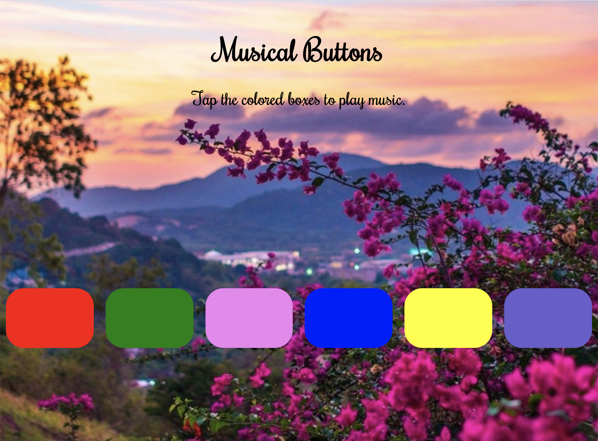

JavaScript
How To Make a Music App Using JavaScript, HTML & CSS?
Summary
For web design or development, there is 3 must know technologies, HTML, CSS, and JavaScript. In this blog you will see how I created a simple music application using these three tools. In this music app there are few colorful buttons which when clicked produces various cool sounds.
Getting Started
To create this app, I required six mp3 music files which I downloaded from the internet and it can be found in my GitHub repository. I began by creating the user interface with HTML which adds elements for the audio and player buttons and then applied styling for each element defined in the HTML file using CSS. At the end I added to the HTML elements using JavaScript. For writing the codes, I used Sublime text editor which can be downloaded for free.

HTML and CSS
The index.html file only has a div tag with class music which designs the body of the app and a few other div tags which takes class buttons for the colored buttons. I used an audio tag for the six mp3 files and added to their respective colored buttons. The style.css file is linked at the head section of the html file. In the CSS file I styled the buttons, sets their color, styles the text, font and app background using CSS tools and techniques.
<section class="music">
<header>
<h1>Musical Buttons</h1>
<p>Tap the colored boxes to play music.<p>
</header>
<div class="buttons">
<div class="buttons1">
<audio src="./sounds/bubbles.mp3"class="sound">
</audio>
</div>
</div>
</section>
JavaScript Functions
For the JavaScript part of the app, the first line of music.js file calls addEventListener() which is an inbuilt function in JavaScript which attaches an event handler to the specified element without overwriting existing event handlers. Many event handlers can be added to one element. It makes it easier to control how the event reacts to bubbling. The method takes three parameters. The first is the type of the event, second parameter is the function we want to call when the event occurs. The third parameter is a Boolean value and it is optional. In this app, the method adds event listeners to window object and when the contents are loaded it runs the arrow function. Then I added the constants sounds and buttons to get all the music files and buttons from the HTML file. The document object represents the web page. If you want to access any element in an HTML page, you always start with accessing the document object. Then the querySelectorAll() method returns all elements in the document that matches a specified CSS selector. In this case, it returns all the sound class and buttons class with all the div tags from the CSS file.
window.addEventListener("load", () => {
const sounds = document.querySelectorAll(".sound");
const buttons = document.querySelectorAll(".buttons div");
});
Playing Sounds
Now for the sound part I get all the buttons and call the JavaScript Array forEach() method which calls a function once for each element in an array, in order. Then I create a function to get the sounds taking the buttons and its respective sound index as parameters. Since I have access to each button, I added an event listener to each one of them. So, whenever I click on the buttons it runs a function and calls the sounds with its index where 0 is the first sound, 1 is the second sound and so on. Then I set the current time to 0 so that the sound restarts every time I click on a button otherwise I have to wait until the sound finishes to click again. At last I call the play() method which is the HTML audio/video DOM method used to start playing an audio or video.
buttons.forEach((button, index) => {
button.addEventListener("click", function() {
sounds[index].currentTime = 0;
sounds[index].play();
});
});
Conclusion
So this is how I created a simple Music App using HTML, CSS and JavaScript.
The starter files can be found here.